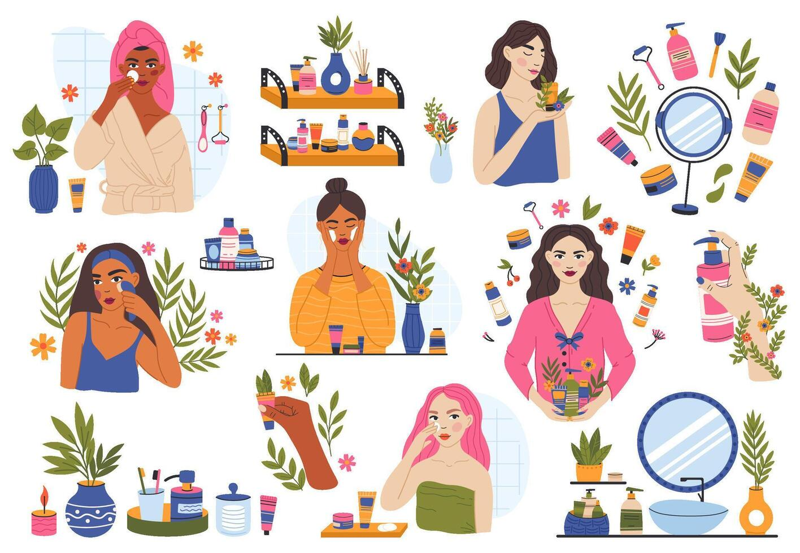
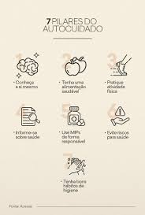

AUTO CUIDADO FEMININO
Transformando pequenos gestos em grandes atos de amor-próprio

O autocuidado feminino na beleza envolve dedicar atenção à pele, cabelo, unhas e estilo pessoal, criando pequenos rituais que fortalecem a autoestima, promovem bem-estar e aumentam a confiança no dia a dia.

Saber as dicas de autocuidado feminino na beleza é extremamente importante: envolve cuidar da pele, cabelo, unhas e estilo pessoal, criando pequenos rituais que fortalecem a autoestima, promovem bem-estar e aumentam a confiança no dia a dia.

O apoio entre mulheres é essencial para fortalecer a confiança, incentivar o crescimento pessoal e profissional, compartilhar experiências e superar desafios. Quando mulheres se apoiam, criam uma rede de solidariedade que promove autoestima, empoderamento e transformação positiva na vida de todas.